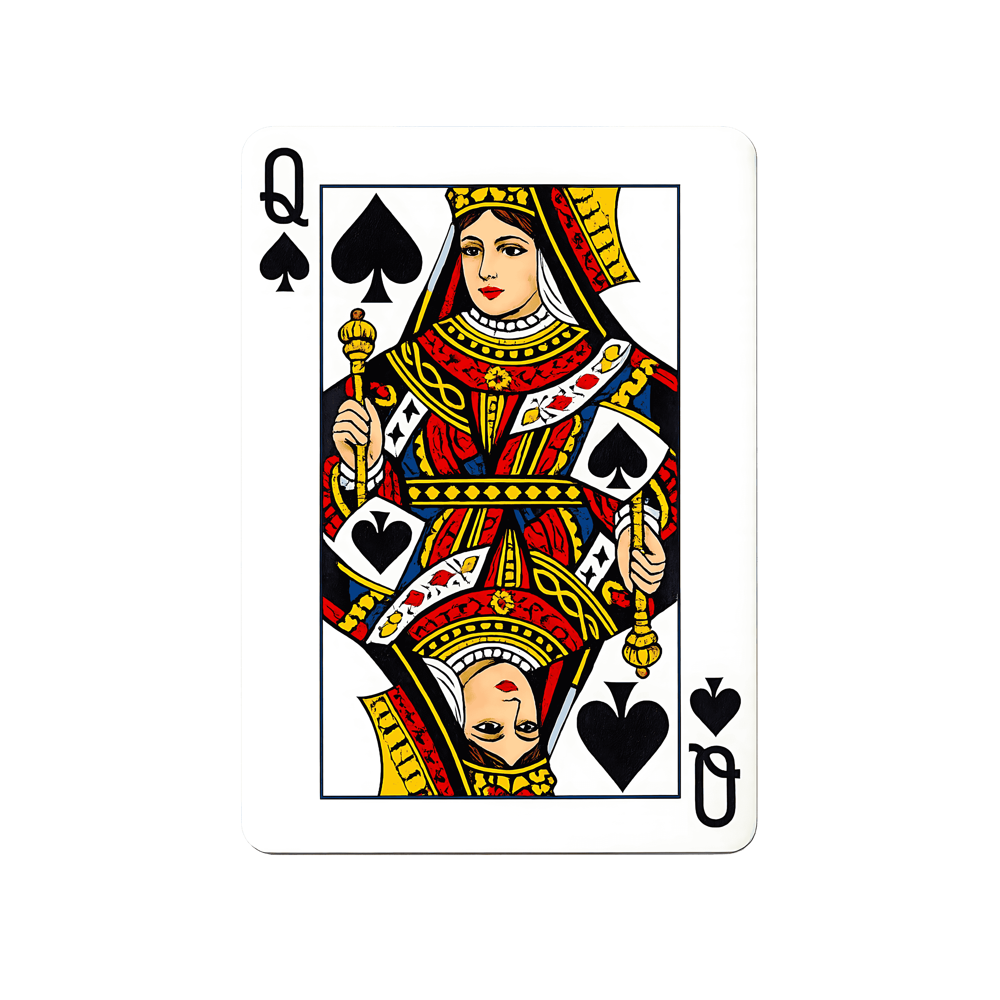

N-Queens Constraint Optimization & Visualization System
Backtracking
Complexity
Optimization
Audio On
N:
8
4
8
10
Algorithm:
Classical Backtracking
Branch & Bound (Bitmasks)
Bitwise Benchmark
Theme:
Monochrome Minimal
Deep Obsidian
Tournament Slate
First Solution Only
Ready. Press Play or Step Next to initialize search.
Play
Pause
Step Back
Step Next
Reset
Next Solution
Speed:
70x (255ms)
Attack Rays
Threat Heatmap
Sandbox Mode
Sandbox:
Click cells on the board to manually toggle queen placements.
Hint
Clear Board
Solve From Here
Discovered Solutions
Click thumbnail to load board configuration
Searching for solutions...